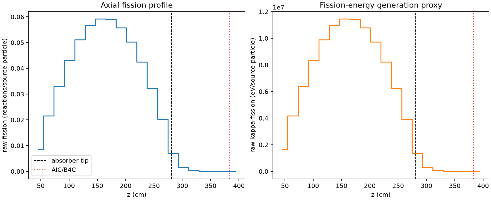
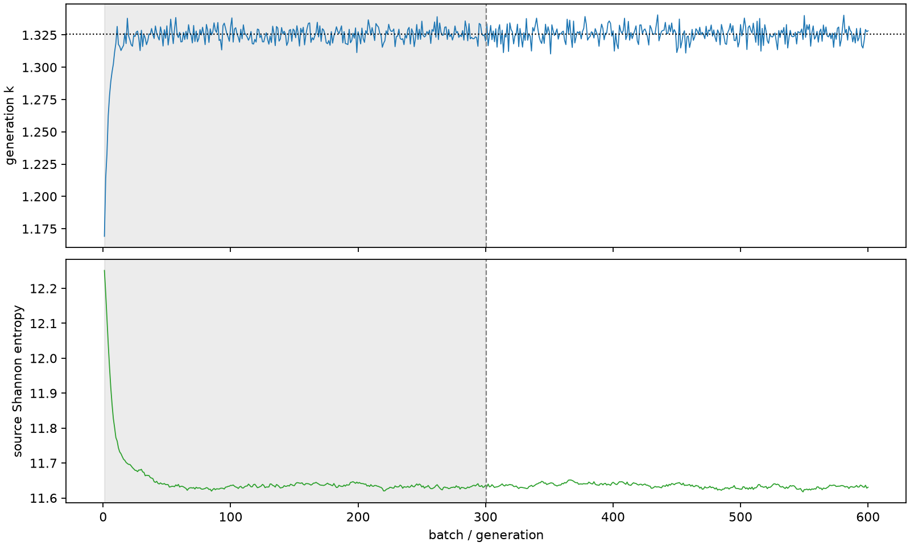

| field | value |
|---|---|
| experiment | V2-STAGE_128_OGRENCI_02-0008 |
| k | 1.325798765416229 |
| MC standard error | 0.00018988288468531206 |
| seconds | 1107.4490606979998 |
| acceptance | not_assessed |
| convergence | review_required |
Completed is output integrity only; physical and statistical review required. Zero tallies do not prove zero production or zero uncertainty.
| diagnostic | value |
|---|---|
| geometric fuel voxels | 5280 |
| zero fission tally voxels | 47 |
| low signal fuel voxels | 831 |
| low signal fission share | 7.555641883348388e-05 |
| low signal kappa share | 7.557806485610166e-05 |
| important fission share | 0.9501074361004916 |
| previous filter included | 4449 |
| duration estimate s | 1562.5173488400023 |
| actual minus estimate s | -455.06828814200253 |
| fission relative MC error | statistics |
|---|---|
| all_geometric_fuel | {"voxels": 5280, "positive_mean_voxels": 5233, "zero_mean_voxels": 47, "undefined_relative_error_voxels": 47, "median": 0.011199562218693549, "p95": 0.6615581768499103, "maximum": 1.0000000000000002} |
| low_signal | {"voxels": 831, "positive_mean_voxels": 784, "zero_mean_voxels": 47, "undefined_relative_error_voxels": 47, "median": 0.5209488813518988, "p95": 1.0, "maximum": 1.0000000000000002} |
| important_95pct | {"voxels": 3042, "positive_mean_voxels": 3042, "zero_mean_voxels": 0, "undefined_relative_error_voxels": 0, "median": 0.008417759390564642, "p95": 0.012520841953882951, "maximum": 0.01586137305272756} |
| outside_previous_filter | {"voxels": 831, "positive_mean_voxels": 784, "zero_mean_voxels": 47, "undefined_relative_error_voxels": 47, "median": 0.5209488813518988, "p95": 1.0, "maximum": 1.0000000000000002} |
| kappa_fission relative MC error | statistics |
|---|---|
| all_geometric_fuel | {"voxels": 5280, "positive_mean_voxels": 5233, "zero_mean_voxels": 47, "undefined_relative_error_voxels": 47, "median": 0.01118744140291393, "p95": 0.6614275499401224, "maximum": 1.0000000000000002} |
| low_signal | {"voxels": 831, "positive_mean_voxels": 784, "zero_mean_voxels": 47, "undefined_relative_error_voxels": 47, "median": 0.5215325651705068, "p95": 1.0, "maximum": 1.0000000000000002} |
| important_95pct | {"voxels": 3042, "positive_mean_voxels": 3042, "zero_mean_voxels": 0, "undefined_relative_error_voxels": 0, "median": 0.008408869566176648, "p95": 0.012509142355324448, "maximum": 0.015844802423393572} |
| outside_previous_filter | {"voxels": 831, "positive_mean_voxels": 784, "zero_mean_voxels": 47, "undefined_relative_error_voxels": 47, "median": 0.5215325651705068, "p95": 1.0, "maximum": 1.0000000000000002} |
| axial bin | fission share | kappa-fission share |
|---|---|---|
| 1 | 0.01596216960923713 | 0.015962758524434205 |
| 2 | 0.039833383267793766 | 0.0398331959143598 |
| 3 | 0.06079898316734293 | 0.060798922457628364 |
| 4 | 0.0793151977812484 | 0.07931488923532617 |
| 5 | 0.09437573309984215 | 0.09437541529868328 |
| 6 | 0.10450997969996037 | 0.10450958476292475 |
| 7 | 0.10917155267121677 | 0.10917127078011926 |
| 8 | 0.10883539054008459 | 0.10883494274223603 |
| 9 | 0.10283160795429402 | 0.10283122586416332 |
| 10 | 0.09274636153664359 | 0.09274605527093006 |
| 11 | 0.07831091103151178 | 0.0783103732801339 |
| 12 | 0.059265364414144026 | 0.059265259597862156 |
| 13 | 0.03741843934355136 | 0.03741840387450546 |
| 14 | 0.013010652212868451 | 0.013012259749194678 |
| 15 | 0.002718182533087087 | 0.00271906181730452 |
| 16 | 0.0006788785656154993 | 0.0006790967140605723 |
| 17 | 0.00016570147972465714 | 0.00016575840713262436 |
| 18 | 4.081004178943815e-05 | 4.0823234175854006e-05 |
| 19 | 9.418071178615775e-06 | 9.419318626495635e-06 |
| 20 | 1.2829788650671629e-06 | 1.2831561982536012e-06 |
Histories include the inactive-to-active transition at batch 300. kappa-fission approximates fission energy production, not total heat deposition.

